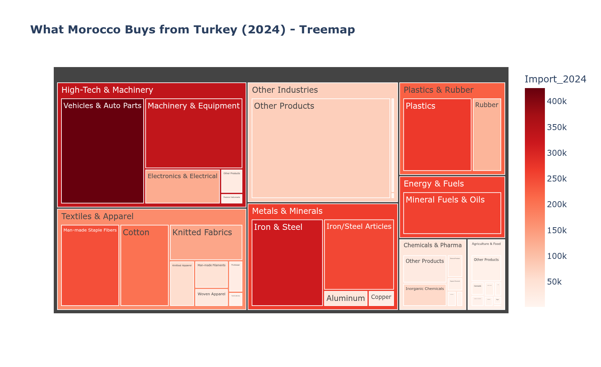
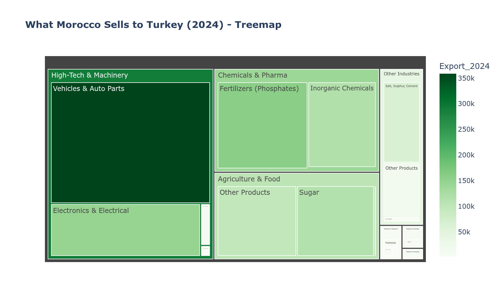

Morocco vs Turkey
Bilateral Trade Analysis 2021–2024
A Data-Driven Response to the Minister's Challenge
Data Source: ITC / UN COMTRADE / Office des Changes du Maroc
The Minister's Challenge
"You have one of the best educations in the world, you have among the best expertise
in the world, and yet the Turks are beating you 5-0 in conquests that you cannot achieve.
Why? Lack of ambition? I don't think so. You fought to get into those schools. You went
to the deepest part of yourself. And then that's it, it's over... Well, ladies and
gentlemen, vacation is over."
— Minister of Industry and Trade
Our Mission: Quantify the "5-0" Score
Key Metrics at a Glance
$3.95B
Imports from Turkey
Trade Evolution (2021–2024)
Persistent gap between imports and exports illustrates the structural trade deficit
The "5-0" Score — Visualized
Turkey's dominance across key trade metrics
Sector-by-Sector Breakdown (2024)
| Sector |
Imports ($M) |
Exports ($M) |
Balance ($M) |
Status |
| High-Tech & Machinery |
923.8 |
514.8 |
−409.0 |
Deficit |
| Textiles & Apparel |
749.4 |
14.0 |
−735.4 |
Deficit |
| Metals & Minerals |
627.6 |
4.9 |
−622.7 |
Deficit |
| Plastics & Rubber |
385.9 |
9.0 |
−376.9 |
Deficit |
| Energy & Fuels |
259.4 |
0.1 |
−259.3 |
Deficit |
| Chemicals & Pharma |
188.6 |
278.6 |
+90.1 |
Surplus |
| Agriculture & Food |
107.8 |
236.5 |
+128.7 |
Surplus |
Sector Balance Visualization
Red = deficit sectors, Green = surplus sectors
Top 10 Deficit Products
Products driving Morocco's trade imbalance with Turkey
Top 10 Surplus Products
Products where Morocco maintains a competitive edge
Growth Analysis — A Silver Lining
Import CAGR: 5.3%
Export CAGR: 13.6%
Morocco's exports are growing 2.6× faster
than imports. If this trend continues, the gap will narrow over time.
Fastest Growing Export Sectors
- High-Tech & Machinery: +33.1% CAGR
- Textiles & Apparel: +23.3% CAGR
- Agriculture & Food: +10.6% CAGR
- Plastics & Rubber: +8.6% CAGR
CAGR by Sector (2021→2024)
Compound Annual Growth Rate comparison: Import (red) vs Export (green)
Trade Deficit Waterfall
How each sector contributes to the overall $2.78B trade deficit
Market Concentration (HHI)
Imports HHI
Turkey sells a wide variety of products to Morocco — highly diversified imports.
Exports HHI
1,589
Moderate Concentration
Morocco's exports are concentrated in fewer products — higher dependency risk.
Concentration Analysis
Top products by trade share — Imports (left) vs Exports (right)
Competitiveness Matrix
Import CAGR vs Export CAGR — Ideal position: upper-left quadrant
Strategic Opportunities
Trade gap (left) and coverage ratio (right) by sector
Executive Dashboard
Comprehensive overview of all key metrics and trends
Import & Export Composition


Import composition (left) vs Export composition (right) by product category
Strategic Recommendations
Short-Term (1-2 Years)
- Scale up Agriculture & Food exports (already in surplus)
- Accelerate High-Tech exports (33.1% CAGR momentum)
- Invest in high-value textile segments (23.3% export CAGR)
Medium-Term (3-5 Years)
- Import substitution in Plastics & Rubber
- Diversify export basket (reduce HHI from 1,589)
- Leverage Tangier Free Zone for automotive exports
Long-Term Vision (5+ Years)
- Match Turkey's trillion-dollar trade ambition with an equally bold Moroccan roadmap
- Use AfCFTA to build scale and compete in third markets across Africa
- Establish technology transfer joint ventures with Turkish industrial leaders
Conclusion
The "5-0" is real — but the trend is changing
2.6×
Export growth outpacing imports
14
Products with competitive advantage
33.1%
High-Tech export CAGR
"Mesdames et messieurs, c'est fini les vacances."
— The Minister